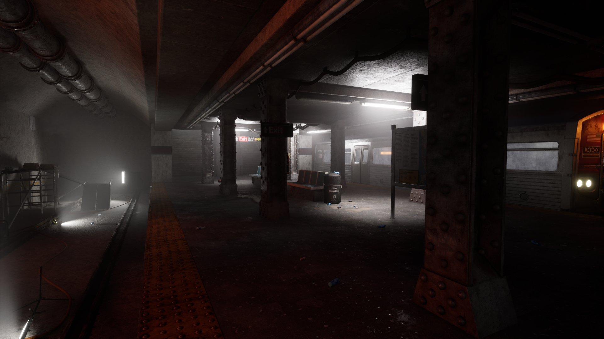
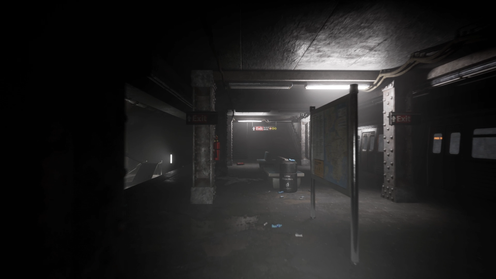
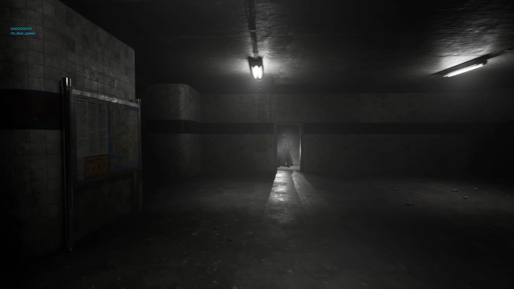
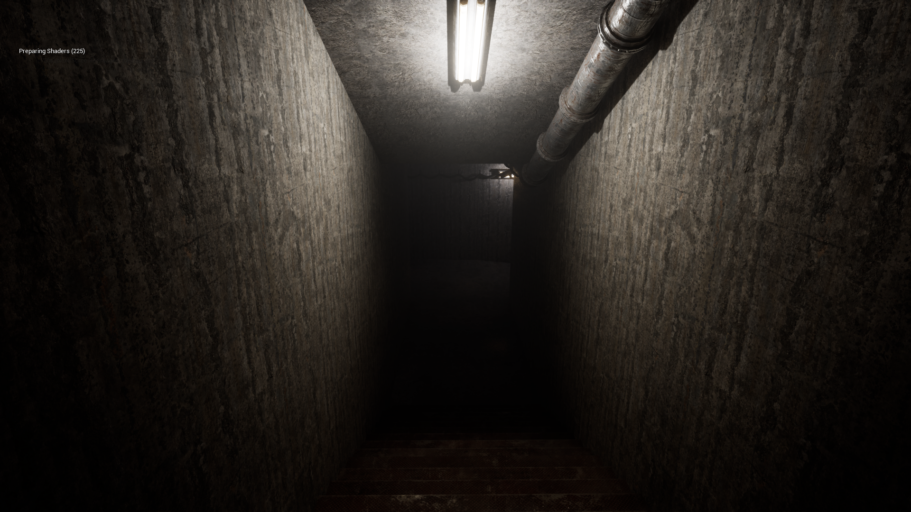
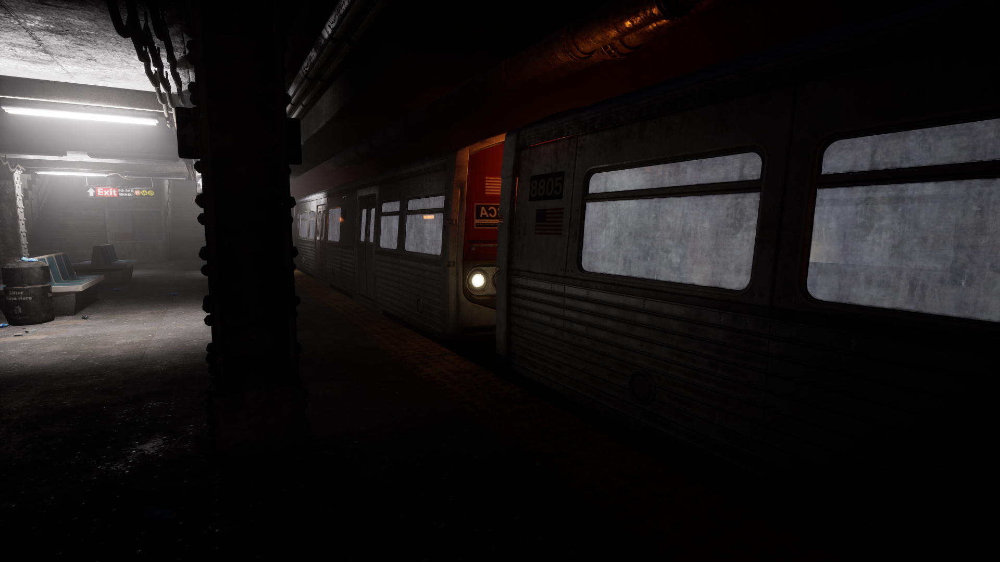

Unreal Engine - Planet Paradise
Construye, investiga, gestiona y pon a trabajar a la tripulación. ¿Podrás sobrevivir y terraformar el planeta?
Más InformaciónUn juego de terror en primera persona donde escaparás de una estación de metro abandonada. Desarrollado en Unreal Engine.
Embárcate en una experiencia de terror psicológico en primera persona con gráficos realistas. Asumes el papel de Mike, un grafitero intrépido que se infiltra en el metro con la intención de pintar un vagón. Sin embargo, pronto descubrirás que no está solo...
Explora caminando... o corriendo un metro abandonado, escapa de una persona encapuchada que te persigue, encuentra la llave de la garita de seguridad y consigue salir ileso de esta pesadilla.
A nivel individual asumí el rol de programación. Realizé los comportamientos de las puertas, los triggeres de los textos y principalmente el comportamiento de la IA del enemigo.
El enemigo tenía tres fases distintas, cada una con sus comportamientos. Haciendo que tuviese una patruya, que al ver al jugador lo persiga, y al perderle regresará a hacer su patrulla. Y en la fase final, cambiar de posición, aprir una puerta y perseguir al jugador hasta la salida.
La programación llevó alrededor de 75 horas. Fue dificil, porque al ser en 3D, los comportamientos en el terreno podían fallar y había que ajustar mucho el terreno y los props. Otro reto fue hacer que se comportse de forma humana, sus reacciones, movimientos debían de ser creibles.
Las herramientas utilizados fueron Unreal Engine 5, Unreal Engine Blueprints y Draw.io para la creación de diagramas de flujo.
En esta foto se muestra un ejemplo del código. En esta se muestra cuando el jugador pasa un checkpoint y se crea una barrera natural entre él y el enemigo. El enemigo se detiene, se gira para mirar al jugador, cambia su animación, espera un momento y luego regresa a su punto de partida, cambiando nuevamente su animación a correr. El objetivo de esta secuencia es darle al enemigo un comportamiento más humano.
Desarrollamos este proyecto con un equipo nuevo donde al principio no nos conocíamos. Trabajamos todos juntos para completar el proyecto y nos esforzamos en aprender Unreal Engine, que era nuevo para nosotros en ese momento. Nos apoyamos mutuamente para lograr completar este proyecto.
Galería





Construye, investiga, gestiona y pon a trabajar a la tripulación. ¿Podrás sobrevivir y terraformar el planeta?
Más Información
representación 3d en primera persona de un laberinto mediante raycasting, similar a wolfenstein 3d (1992). Realizado desde 0 en C
Más información